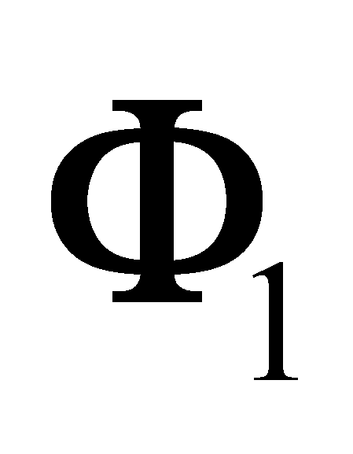

|
|
|
Taking into account a simple case, a group of two material systems MS1 and MS2 which are displayed in the figure 7.4.1, in which the circles represent the real bounding surfaces of the systems against the outside medium Me, the arrows pointed on the circles are outer influxes, the arrows pointed on the outside are inner trafluxes (emergent, export fluxes), and the bent arrows from the inside represent (symbolically) the fluxes of each material system which are internally stored.
Fig. 7.4.1
For simplifying the figure, the arrows which symbolize both the outer influx and the inner traflux (emergent fluxes), must be considered as resultants along the direction of respective continuous distributions on RBS, of the FDV specific to the incident fluxes on RBS, and also emergent through RBS. From all the external influxes, only a fraction shall penetrate inside MS, the rest being reflected (returned to Me). This part from the outer incident fluxes, the transmitted fluxes (import flux, external traflux) shall be added (vectorial summarization) to the initial stockpile of inner fluxes and, according to the sign of this sum, this stockpile shall be increased (compensating in this way the losses produced by means of the export fluxes), or shall be decreased.
Definition 7.4.1: The interaction which conserve or increase the inner flux stockpile of the interacting material systems (despite the losses due to the emergent fluxes) is named constructive interaction.
Obviously, there is also a situation when, as a result of the interaction, the inner flux stockpile of the involved MS drops, that is why we are dealing with a destructive interaction. Next, we are about to see that, for the formation of a stable MS, the interactions between its elements must be strictly constructive.
By analyzing the figure 7.4.1, it might be noticed that a specific MS is under the incidence of fluxes coming both from the outside of the unit (namely, from the outside of the theoretical surface Σ which surrounds the unit) and from the neighbour system. In this way, flux pairs reciprocally provided by MS may be observed. Due to simplicity reasons, we may consider that the fluxes released by the two MS are of the same kind (k=1), and RBS transmittance for this flux type of the two MS involved in the interaction processes are equal and of same value p. Therefore, we shall have:
F12, emergent flux (export) of MS1 and incident on MS2, out of which pF12 shall be transmitted inside MS2;
F21, emergent (export) flux of MS2 and incident on MS1, out of which pF21 shall be transmitted inside MS1.
The flux pF12 shall be composed (vectorial summarization) with the flux , and the flux pF21 with , that is a composition which must met several rules:
The composition of some distributions means the individual composition between all its constitutive elements (which makes-up interactive couples) of the two distributions, which means that the flux which is recently transmitted must be assigned (distributed) to all the elements of the previously stored flux.
The external state of MS (the action component which is “visible from the outside”) is given by the common components of the flux resulted from the composition. Otherwise speaking, the driven MS is an object with an inner RS, and the outer state of this object is actually the state of the inner RS against the outer RS. Because the inner RS is unique for a MS, the state attributes of this RS shall be evenly distributed on all the MS elements, which means that they would be common attributes of these elements.
The flux composition conditions, correlated with the fact that the internally stored flux has a set of material objects which interact one another (a DS or CS) as its material support, tell us that a finite temporal interval is needed for this composition process, and that during this interval, the external state of MS does not change (the state before the inflow of the flux agent is maintained)41. The fact that the external state of a MS cannot be instantly changed, that it must be preceded by the internal state change and that a finite temporal interval is needed for this process, is a basic property of the material systems which is very clearly revealed by considering the flux triad model, more precisely, by the compulsory existence of the fluxes which are internally stored for each MS. Another very relevant aspect is that during the period necessary for the inner state change, the driven MS withstand to the agent flux, by means of an opposition manifested through a contrary flux deployed against the agent flux - reaction flux - which shall be described later on in this paper (see also annex X.7).
41 The external state of the driven MS shall be changed only after all the elements of the internally stored flux would have been composed (vectorial summarization) with the agent traflux, namely, after the change of the inner state of MS is completed.
Copyright © 2006-2011 Aurel Rusu. All rights reserved.